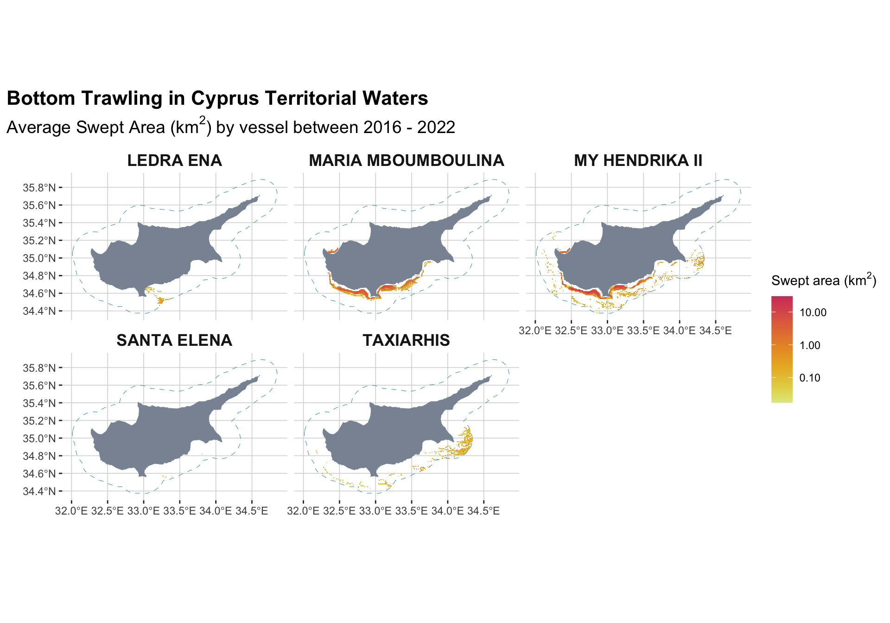

2 Fleet & effort
Overview
Bottom trawling accounts for ~21% of the total annual fishing effort in Cyprus’ Exclusive Economic Zone (EEZ) between 2016 and 2024 (GFW, 2025). On average, bottom trawlers operated for 3,500 hours per year, with a fleet of 2–3 vessels. In comparison, drifting longlines were the dominant gear type, representing about 61% of total fishing effort (10,100 hours per year) with an average fleet of 17 vessels. Vessels with unidentified gear types (hereafter classified as “other fishing”) contributed roughly 14% (2,300 hours per year), while set longlines and set gillnets together accounted for the remaining 5% of total effort (Figure 2.1)
Overall, bottom trawling has occurred across 4,112 km² of Cyprus’ EEZ and 1,865 km² of its territorial waters, meaning that approximately 4.1% of the EEZ and 12.9% of the territorial waters have been trawled at least once since 2016 (GFW, 2025). This estimate is based on the cumulative area of 0.01º pixels where trawling has been detected. Using this metric, on average, 1,058 km² of the EEZ and 668.4 km² of the territorial waters are trawled annually (Figure 2.2).
In comparison, drifting longlines have fished across a much larger area, covering approximately 29,000 km² in total, with an annual footprint ranging from 6,000 to 14,000 km² (6–14% of the EEZ). Meanwhile, vessels classified as “other fishing” initially operated over areas exceeding 2,000 km² but have experienced a significant contraction in recent years. Notably, the spatial patterns of some vessels in the early years—such as Santa Maria and GIA SOU KAIKI MOU AI NIKOLA—resemble those of bottom trawlers, suggesting they may have engaged in trawling at least partially.
Most bottom trawling activity in Cyprus is concentrated within territorial waters, with 88% of total effort occurring inside the 12 nautical mile (n.m.) boundary (Figure 2.3). In contrast, drifting longlines are primarily deployed beyond this zone, with 75% of their effort taking place outside territorial waters. “Other fishing” vessels also operate largely within the 12 n.m. limit, accounting for 67% of their total effort. Similarly, set longlines and set gillnets allocate approximately 75% of their fishing effort within territorial waters (GFW, 2025). These spatial distributions highlight distinct patterns of gear use, with bottom trawling and passive gears being more coastal, while drifting longlines operate predominantly in offshore areas.
The fleet
Since 2016, five distinct bottom trawlers have been detected fishing in Cyprus’ EEZ (GFW, 2025). Among them, My Hendrika II (LOA: 19.5 m, engine power: 292 kW) and Maria Mboumboulina (LOA: 24 m, engine power: 436.4 kW) account for the majority of the fishing effort, contributing 53% and 30%, respectively (GFW, 2025). These two vessels dominate bottom trawling activity in the region, while the remaining effort is distributed among three other trawlers (Table 2.1). The third most active vessel, Taxiarhis, accounts for 10% of total effort but operates primarily beyond the 12-nautical-mile (n.m.) zone, making it less relevant to this analysis of territorial waters (GFW, 2025).
| Bottom Trawling Vessel Summary | |||||||
|---|---|---|---|---|---|---|---|
| Key metrics for detected trawlers in Cyprus’ EEZ | |||||||
| Vessel Name | Length (m) | Engine Power (kW) | Net Width (m) | Avg. Footprint (km²) | Avg. Trawled Hours | Avg. Distance (km) | Avg. Swept Area (km²) |
| MY HENDRIKA II | 20.0 | 292.0 | 56.0 | 571 (34%) | 2170 (53%) | 10925 (54%) | 612 (51%) |
| MARIA MBOUMBOULINA | 24.0 | 436.0 | 63.0 | 486 (29%) | 1210 (29%) | 5959 (29%) | 375 (31%) |
| TAXIARHIS | 19.0 | 421.0 | 62.0 | 467 (28%) | 398 (10%) | 1929 (9%) | 120 (10%) |
| SANTA ELENA | 22.0 | 493.0 | 65.0 | 100 (6%) | 307 (7%) | 1477 (7%) | 96 (8%) |
| LEDRA ENA | 24.0 | 399.0 | 61.0 | 73 (4%) | 23 (1%) | 124 (1%) | 8 (1%) |
Trawling Effort
Between 2016 and 2024, bottom trawling activity in Cyprus’ EEZ experienced notable fluctuations. From 2016 to 2018, annual effort remained relatively stable, averaging around 2,100 hours (GFW, 2025). In 2020–2021, effort increased significantly, exceeding 5,000 hours despite fewer vessels operating during this period. This peak was followed by a gradual decline, with effort stabilizing at approximately 3,000 hours by 2024 (Figure 2.4). These changes may reflect shifts in fleet composition, regulatory measures, or economic factors influencing fishing operations ((COVID?))
Official sources
Official data provides a key validation point for our findings. According to the EU JRC Fisheries Dependent Information (FDI) Data Call, Cyprus’s bottom trawling fleet comprised between one and four active vessels per quarter from 2016 to 2023. These vessels, classified as demersal otter trawlers, ranged in length from 24 to 40 meters. Notably, the fleet appears to have undergone renewal in 2020, as the average vessel age dropped sharply from 31.5 years. Around the same time, total kilowatts (KW) and gross tonnage (GT) increased, suggesting the introduction of newer, higher-capacity vessels (Figure 2.5)
As observed in GFW data, official sources confirm that fishing effort has fluctuated considerably over this period. Before 2018, key effort metrics (fishing days, sea days, KW hours at sea, and trips) declined steadily. In 2018, these metrics showed a temporary increase, suggesting a short-term spike in activity. More recently, effort has tapered off again, indicating either a continuation of the previous downward trend or stabilization at lower levels (Figure 2.7, Figure 2.6).

Swept Area
The footprint values presented above provide a broad measure of the fleet’s operational range, but they do not fully capture the extent of seafloor disturbance. The actual impact—referred to here as the swept area—can be either smaller or larger than the detected footprint due to two key opposing factors: (1) the relatively narrow width of trawl nets (40–60 m) compared to the coarse resolution of footprint mapping (~1 km² per pixel) and (2) the repeated passes over the same fishing grounds multiple times per year (Sala et al., 2021). Consequently, in areas of low-intensity trawling, the cumulative swept area may be smaller than the detected footprint, while in heavily trawled zones, it can exceed it. This pattern is evident in Cyprus’ territorial waters, where an average of 668.4 km² (4.5%) is trawled annually, yet the cumulative swept area reaches 897.7 km² (6.1%), highlighting the concentrated nature of bottom trawling in these areas (Figure 2.8).

Understanding the spatial intensity of bottom trawling is important for assessing its ecological impact. By comparing the swept area to the size of each pixel, we estimate both the fraction of a cell fished and the frequency of trawling within it. This distinction allows us to differentiate between areas that experience occasional fishing and those subjected to repeated disturbance, which has significant implications for seafloor integrity and benthic ecosystem health (Sala et al., 2021).
During the study period, the annual average swept area ratio (SAR) within territorial waters was 0.48 (median = 0.012), though the distribution was highly right-skewed (Figure 2.11). This indicates that while most areas experienced minimal disturbance, some were repeatedly trawled, concentrating fishing pressure in specific regions.
On average, nearly half of each fished pixel’s area was directly impacted by trawling, highlighting the widespread yet uneven nature of fishing pressure. Notably, 15% of trawled areas in territorial waters had a cumulative SAR exceeding 1, meaning their entire area was trawled at least once, while 1.5% experienced SAR values over 5, with a maximum recorded SAR of 9. This means that in certain locations, the seabed was trawled multiple times within a single year, greatly increasing the risk of habitat degradation
Swept Volume
To further assess the physical impact of bottom trawling, we estimate the trawled volume by incorporating the penetration depth of the gear. While swept area provides a two-dimensional measure of disturbance, trawled volume accounts for the vertical extent of sediment disruption. For otter trawls, which are commonly used in demersal fisheries, the average penetration depth is 2.4 cm (Sala et al., 2021). By multiplying the swept area by this depth, we quantify the total volume of sediment disturbed by trawling activity.
To contextualize this disturbance, we also estimate the swept volume ratio (SVR) for each pixel by comparing the trawled volume to the total sediment volume within that cell. We define the volume of each pixel using a sediment depth of 1 meter, as this represents the depth of the carbon layer (Atwood et al., 2020). The SVR provides a direct estimate of the fraction of sedimentary carbon in each cell that is disturbed by trawling, offering a more precise measure of its impact on carbon stocks. The average SVR of fished areas in Cyprus’ territorial waters was 0.011 (median = 0.0003), indicating that a small fraction of the seabed’s carbon layer is directly affected by trawling activity (Figure 2.12).
Summary
Table 2.2 presents key metrics of bottom trawling activity in Cyprus’ territorial waters from 2016 to 2024, integrating data from both GFW and official sources. These metrics include total trawled area, trawling hours, distance covered, swept area, swept volume, and average SAR and SVR.
| Trawling Activity Summary (2016 - 2022) | |||||||||
|---|---|---|---|---|---|---|---|---|---|
| Key Metrics of Fishing Effort and Impact | |||||||||
| 2016 | 2017 | 2018 | 2019 | 2020 | 2021 | 2022 | 2023 | 2024 | |
| Average Age* | 28 | 30 | 30 | 32 | 12 | 13 | 14 | NA | NA |
| Total GT* | 185 | 185 | 185 | 185 | 218 | 218 | 218 | NA | NA |
| Total KW* | 633 | 633 | 633 | 633 | 696 | 696 | 696 | NA | NA |
| Total Trips* | 265 | 214 | 178 | 208 | 199 | 173 | 175 | NA | NA |
| Total Area (km²)† | 804 | 468 | 577 | 760 | 768 | 772 | 599 | 573 | 694 |
| Total Hours† | 1,879 | 1,828 | 1,809 | 3,239 | 5,284 | 4,175 | 3,678 | 3,363 | 2,544 |
| Total Distance (km)† | 9,617 | 9,217 | 9,023 | 16,075 | 26,445 | 20,813 | 18,390 | 16,765 | 12,764 |
| Total Swept Area (km²)† | 539 | 516 | 513 | 929 | 1,569 | 1,227 | 1,065 | 985 | 735 |
| Total Swept Volume (km³)† | 0.0129 | 0.0124 | 0.0123 | 0.0223 | 0.0377 | 0.0295 | 0.0256 | 0.0236 | 0.0177 |
| Average SAR† | 0.2888 | 0.2766 | 0.2749 | 0.4976 | 0.8408 | 0.6575 | 0.5706 | 0.5278 | 0.3940 |
| Average SVR† | 0.0069 | 0.0066 | 0.0066 | 0.0119 | 0.0202 | 0.0158 | 0.0137 | 0.0127 | 0.0095 |
| * EU Data Collection Framework (DCF) data | |||||||||
| † Global Fishing Watch, 2025 | |||||||||